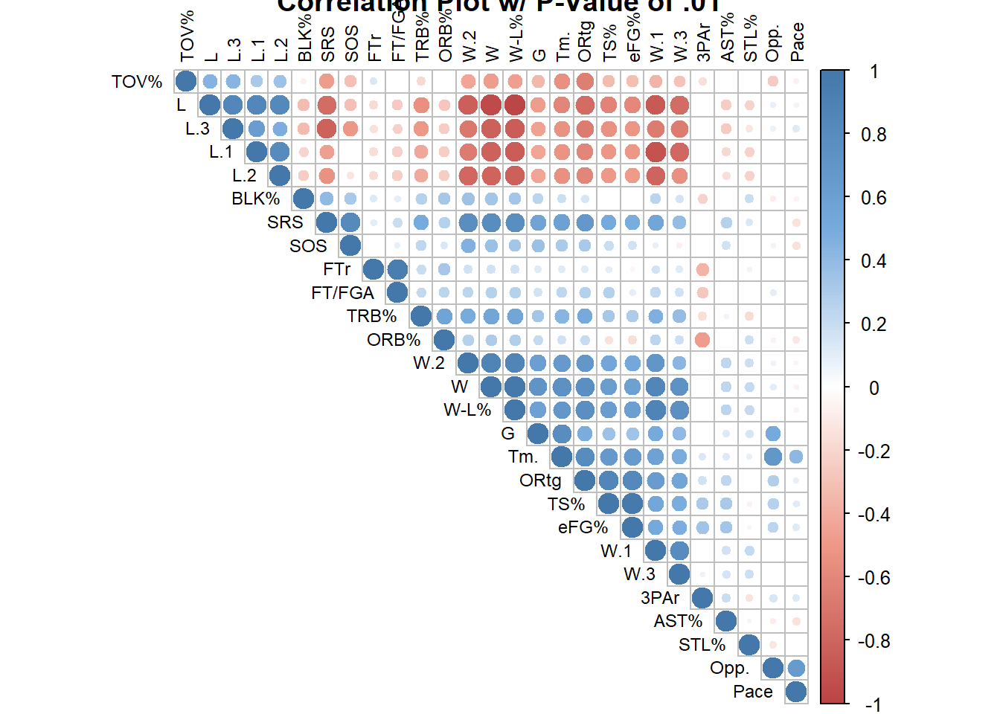
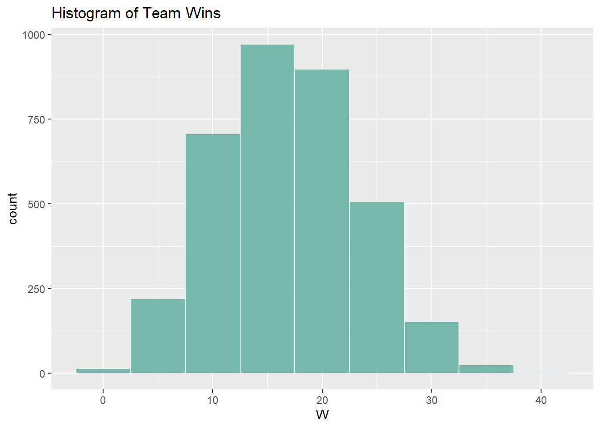
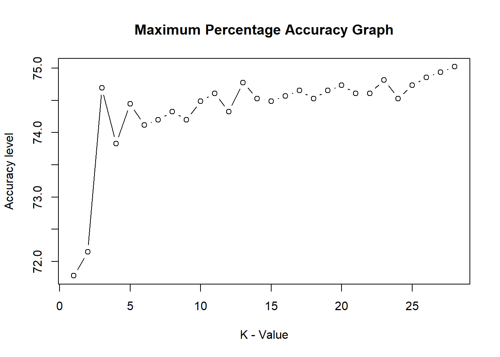

Packages <- c("maps", "plyr", "googleVis", "gsubfn", "rvest",
"tm", "stringr", "dplyr", "tidyverse", "caret",
"corrplot", "DescTools", "rlist", "class")
invisible(lapply(lapply(Packages, rlang::quo_name),
library, character.only = TRUE))## Warning: package 'maps' was built under R version 3.6.3## Warning: package 'plyr' was built under R version 3.6.3##
## Attaching package: 'plyr'## The following object is masked from 'package:maps':
##
## ozone## Creating a generic function for 'toJSON' from package 'jsonlite' in package 'googleVis'##
## Welcome to googleVis version 0.6.11
##
## Please read Google's Terms of Use
## before you start using the package:
## https://developers.google.com/terms/
##
## Note, the plot method of googleVis will by default use
## the standard browser to display its output.
##
## See the googleVis package vignettes for more details,
## or visit https://mages.github.io/googleVis/.
##
## To suppress this message use:
## suppressPackageStartupMessages(library(googleVis))## Warning: package 'gsubfn' was built under R version 3.6.3## Loading required package: proto## Warning: package 'proto' was built under R version 3.6.3## Warning: package 'rvest' was built under R version 3.6.3## Warning: package 'tm' was built under R version 3.6.3## Loading required package: NLP## Warning: package 'NLP' was built under R version 3.6.3## Warning: package 'stringr' was built under R version 3.6.3## Warning: package 'dplyr' was built under R version 3.6.3##
## Attaching package: 'dplyr'## The following objects are masked from 'package:plyr':
##
## arrange, count, desc, failwith, id, mutate, rename, summarise,
## summarize## The following objects are masked from 'package:stats':
##
## filter, lag## The following objects are masked from 'package:base':
##
## intersect, setdiff, setequal, union## Warning: package 'tidyverse' was built under R version 3.6.3## Warning in (function (kind = NULL, normal.kind = NULL, sample.kind = NULL) :
## non-uniform 'Rounding' sampler used## -- Attaching packages --------------------------------------- tidyverse 1.3.1 --## v ggplot2 3.3.5 v readr 1.4.0
## v tibble 3.1.1 v purrr 0.3.4
## v tidyr 1.1.3 v forcats 0.5.1## Warning in (function (kind = NULL, normal.kind = NULL, sample.kind = NULL) :
## non-uniform 'Rounding' sampler used## Warning: package 'tibble' was built under R version 3.6.3## Warning: package 'tidyr' was built under R version 3.6.3## Warning: package 'readr' was built under R version 3.6.3## Warning: package 'purrr' was built under R version 3.6.3## Warning: package 'forcats' was built under R version 3.6.3## -- Conflicts ------------------------------------------ tidyverse_conflicts() --
## x ggplot2::annotate() masks NLP::annotate()
## x dplyr::arrange() masks plyr::arrange()
## x purrr::compact() masks plyr::compact()
## x dplyr::count() masks plyr::count()
## x dplyr::failwith() masks plyr::failwith()
## x dplyr::filter() masks stats::filter()
## x readr::guess_encoding() masks rvest::guess_encoding()
## x dplyr::id() masks plyr::id()
## x dplyr::lag() masks stats::lag()
## x purrr::map() masks maps::map()
## x dplyr::mutate() masks plyr::mutate()
## x dplyr::rename() masks plyr::rename()
## x dplyr::summarise() masks plyr::summarise()
## x dplyr::summarize() masks plyr::summarize()## Warning: package 'caret' was built under R version 3.6.3## Loading required package: lattice##
## Attaching package: 'caret'## The following object is masked from 'package:purrr':
##
## lift## Warning: package 'corrplot' was built under R version 3.6.3## corrplot 0.84 loaded## Warning: package 'DescTools' was built under R version 3.6.3##
## Attaching package: 'DescTools'## The following objects are masked from 'package:caret':
##
## MAE, RMSE## Warning: package 'rlist' was built under R version 3.6.3## Primary Scraping Function for data from sports-reference.com##
Data.Scrape = function(years) {
result = list()
for (year in years){
webpage = sprintf("https://www.sports-reference.com/cbb/seasons/%s-advanced-school-stats.html", year)
wp = read_html(webpage)
a = wp %>% html_node("p:nth-child(1)")
temp.a = data.frame(Year = html_text(a))
b = wp %>% html_nodes("td.left")
temp.b = data.frame(Team = html_text(b))
temp.c = as.numeric(html_text(wp %>% html_nodes("td.right")))
temp.c = matrix(temp.c, nrow = nrow(temp.b), ncol = length(temp.c)/nrow(temp.b), byrow = TRUE)
MM.TrainTest = str_detect(as.matrix(temp.b),"NCAA")
MM.TrainTest = data.frame(MM.TrainTest)
data.temp = data.frame(temp.a, temp.b,MM.TrainTest, temp.c)
data.temp$Team = str_replace(data.temp$Team, "NCAA", "")
data.temp$Team = str_trim(data.temp$Team, side = "right")
data.temp$MM.TrainTest = as.factor(data.temp$MM.TrainTest)
## Pulling the Final Four teams data from each season. Not all pages are the same##
## Matching the Final Four dataset to create a new TestTrain column variable for modeling ##
for (h in 1:7){
text.str = sprintf("p:nth-child(%s)", h)
find = wp %>% html_element(text.str) %>% html_text()
text.find = strapply(find, "Final Four", empty = FALSE, simplify = TRUE)
if (text.find == "Final Four")
n = h
}
## Text transformation and hard coding to extrapolate the Final Four Teams ##
text.str = sprintf("p:nth-child(%s)", n)
text = wp %>% html_element(text.str) %>% html_text()
text = unlist(strsplit(text, ","))
text = unlist(strsplit(text, "and"))
text = unlist(strsplit(text, ":"))
text = trimws(text, "l")
text = trimws(text, "r")
FF = data.frame(text)
FF.Text = gsub("UConn", "Connecticut", FF$text)
FF2 = data.frame(FF.Text)
FF.Text2 = gsub("UNC", "North Carolina", FF2$FF.Text)
FF3 = data.frame(FF.Text2)
## For Loop to add Test and Training column variable ##
data.temp$FF = FALSE
for (i in 1:length(data.temp$Team)) {
for (j in 1:length(FF3$FF.Text2)) {
if (data.temp$Team[i] == FF3$FF.Text2[j])
data.temp$FF[i] = TRUE
}
}
}
return(data.temp)
}
################################################################################
## Running Function and binding data ##
year.string = as.character(seq.int(2011, 2021, 1))
Main.data = list.rbind(lapply(year.string, FUN = Data.Scrape))
################################################################################
## Applying the appropriate Column Headings for the data ##
webpage = sprintf("https://www.sports-reference.com/cbb/seasons/%s-advanced-school-stats.html", 2021)
wp.2 = read_html(webpage)
temp.d = matrix(html_text(wp.2 %>% html_nodes(".poptip")), nrow = 1)
colnames(Main.data)[4:35] = temp.d[3:34]
Main.data$FF.TrainTest = as.factor(Main.data$FF)
Main.data = Main.data %>%
relocate(FF.TrainTest, .after = MM.TrainTest) %>%
select(-FF)
emptycols = sapply(Main.data, function(k) all(is.na(k)))
Main.data <- Main.data[!emptycols]
################################################################################
## Preprocessing of Data ##
Main.data$FF.TrainTest = revalue(Main.data$FF.TrainTest, c("TRUE" = "1", "FALSE" = "0"))
Main.data$MM.TrainTest = revalue(Main.data$MM.TrainTest, c("TRUE" = "1", "FALSE" = "0"))
Main.data = Main.data %>%
filter(Year != "2020-21 Season Pages")%>%
filter(W.1 != "NA")
## Subset of Teams that made the Tournament'MM.TestTrain' factored dataset ##
MM.Teams = Main.data %>%
filter(MM.TrainTest == "1")
Final4.Teams = Main.data %>%
filter(FF.TrainTest == "1")
## Building Bar Chart of Teams who made it to the Championship Tournament ##
Main.data.cat = Main.data[1:4]
Main.data.num = Main.data[5:31]
round(prop.table(table(Main.data.cat$MM.TrainTest)), 2) * 100##
## 0 1
## 82 18Contenders = Main.data.cat %>%
filter(MM.TrainTest == "1")
Contenders = data.frame(table(Contenders$Team))
Contenders = Contenders[order(-Contenders[,2]),]
plot(gvisBarChart(Contenders,
options = list(chartArea ="{left:150,top:50,width:\"50%\",height:\"75%\"}",
width ="1500px",
height="500px",
title = "Champion Teams",
vAxis = "{title:'Teams',textStyle:{fontSize:12}}",
hAxis = "{title:'Tournament Appearances'}")))## starting httpd help server ...## done################################################################################
### Correlation Chart ###
cor.mtest <- function(mat, ...) {
mat <- as.matrix(mat)
n <- ncol(mat)
p.mat<- matrix(NA, n, n)
diag(p.mat) <- 0
for (i in 1:(n - 1)) {
for (j in (i + 1):n) {
tmp <- cor.test(mat[, i], mat[, j], ...)
p.mat[i, j] <- p.mat[j, i] <- tmp$p.value
}
}
colnames(p.mat) <- rownames(p.mat) <- colnames(mat)
p.mat
}
p.mat = cor.mtest(Main.data.num)
col <- colorRampPalette(c("#BB4444", "#EE9988", "#FFFFFF", "#77AADD", "#4477AA"))
corrplot(cor(Main.data.num),
col=col(200), order = "hclust",type = "upper",
tl.col="black", tl.srt = 90, tl.cex = .75,
title = "Correlation Plot w/ P-Value of .01"
,p.mat = p.mat,
sig.level = 0.01,
insig = "blank")
# Correlation ##
Coer.data = Main.data[4:31]
for (i in 1:ncol(Coer.data)){
j = colnames(Coer.data[i])
ContCoef = ContCoef(Coer.data[[i]], Coer.data[[1]])
if(ContCoef > .1)
cat(j, '=', ContCoef, '\n')
}## FF.TrainTest = 0.7071068
## G = 0.6120975
## W = 0.5240749
## L = 0.2827296
## W-L% = 0.642943
## SRS = 0.7019111
## SOS = 0.6428114
## W.1 = 0.1939721
## L.1 = 0.1555932
## W.2 = 0.1902819
## L.2 = 0.166368
## W.3 = 0.1194848
## L.3 = 0.2425233
## Tm. = 0.650737
## Opp. = 0.5138337
## Pace = 0.2305413
## ORtg = 0.4296286
## FTr = 0.2718087
## 3PAr = 0.2616265
## TS% = 0.2920251
## TRB% = 0.2950184
## AST% = 0.234805
## STL% = 0.2383972
## BLK% = 0.3753427
## eFG% = 0.3091816
## TOV% = 0.2792449
## ORB% = 0.3533668
## FT/FGA = 0.2581299Model.ds = Main.data[c("Year","Team","MM.TrainTest","FF.TrainTest", "W-L%","SRS","SOS","Tm.","Opp.","ORtg")]
################################################################################
### The top five winning teams for the past 10 seasons ###
ggplot(Main.data, aes(x = W)) +
geom_histogram(binwidth = 5, fill="#69b3a2", color="#e9ecef", alpha=0.9) +
ggtitle("Histogram of Team Wins")
Model.ds1 = Model.ds %>%
filter(MM.TrainTest == "1")
Top.Win.Teams = Model.ds1[order(-Model.ds1[,6] ),]
Top.5.Teams = head(Top.Win.Teams, 5)
Bottom.5.Teams = tail(Top.Win.Teams, 5)
TopBottom.5.Teams = rbind(Top.5.Teams, Bottom.5.Teams)
view(TopBottom.5.Teams)
plot(gvisBubbleChart(TopBottom.5.Teams,idvar = "Team",xvar = "W-L%",
yvar ="Tm.",colorvar = "Opp.",sizevar = "FF.TrainTest",
options=list(chartArea ="{left:150,top:50,width:\"50%\",height:\"75%\"}",
width ="1500px", height="500px",
title = "Top 5 and Bottom 5 Teams by Wins who Played in the Tournament",
titlePosition = 'out',
vAxis = "{title:'Total Team Points'}",
hAxis = "{title:'Win and Loss Percentage'}",
chartArea ="{left:150,top:50,width:\"50%\",height:\"75%\"}",
width ="1500px", height="500px",
bubble = "{textStyle:{color:'black', fontSize: 8}}",
colorAxis = "{colors:['grey', 'blue']}")))
################################################################################
### Build of Model ###
# Normalizing Data for Model #
normalize = function(x){
return((x - min(x)) / (max(x) - min(x)))}
Model.subset = Model.ds[c("MM.TrainTest", "W-L%","SRS","SOS","Tm.","Opp.","ORtg")]
Model.ds.subset = as.data.frame(lapply(Model.subset[2:6], normalize))
dat.d = sample(1:nrow(Model.ds.subset), size = nrow(Model.ds.subset) * 0.7, replace=FALSE)
train.dataset = Model.subset[dat.d,]
test.dataset = Model.subset[-dat.d,]
train.dataset.label = Model.subset[dat.d,1]
test.dataset.label = Model.subset[-dat.d,1]
## Classification Results using KNN modeling ##
set.seed(20210427)
# For Loop to identify the best k value to use for the best results #
a = train.dataset
b = test.dataset
c = train.dataset.label
i = 1
k.optm = 1
for (i in 1:28){
knn.mod = knn(train = a, test = b, cl = c, k = i)
k.optm[i] = 100 * sum(c == knn.mod) / NROW(c)
k = i
cat(k, '=', k.optm[i], '\n')
}## Warning in `==.default`(c, knn.mod): longer object length is not a multiple of
## shorter object length## Warning in is.na(e1) | is.na(e2): longer object length is not a multiple of
## shorter object length## 1 = 71.79697## Warning in `==.default`(c, knn.mod): longer object length is not a multiple of
## shorter object length
## Warning in `==.default`(c, knn.mod): longer object length is not a multiple of
## shorter object length## 2 = 71.79697## Warning in `==.default`(c, knn.mod): longer object length is not a multiple of
## shorter object length
## Warning in `==.default`(c, knn.mod): longer object length is not a multiple of
## shorter object length## 3 = 74.21203## Warning in `==.default`(c, knn.mod): longer object length is not a multiple of
## shorter object length
## Warning in `==.default`(c, knn.mod): longer object length is not a multiple of
## shorter object length## 4 = 73.35244## Warning in `==.default`(c, knn.mod): longer object length is not a multiple of
## shorter object length
## Warning in `==.default`(c, knn.mod): longer object length is not a multiple of
## shorter object length## 5 = 74.62137## Warning in `==.default`(c, knn.mod): longer object length is not a multiple of
## shorter object length
## Warning in `==.default`(c, knn.mod): longer object length is not a multiple of
## shorter object length## 6 = 73.76177## Warning in `==.default`(c, knn.mod): longer object length is not a multiple of
## shorter object length
## Warning in `==.default`(c, knn.mod): longer object length is not a multiple of
## shorter object length## 7 = 74.4167## Warning in `==.default`(c, knn.mod): longer object length is not a multiple of
## shorter object length
## Warning in `==.default`(c, knn.mod): longer object length is not a multiple of
## shorter object length## 8 = 74.49857## Warning in `==.default`(c, knn.mod): longer object length is not a multiple of
## shorter object length
## Warning in `==.default`(c, knn.mod): longer object length is not a multiple of
## shorter object length## 9 = 74.21203## Warning in `==.default`(c, knn.mod): longer object length is not a multiple of
## shorter object length
## Warning in `==.default`(c, knn.mod): longer object length is not a multiple of
## shorter object length## 10 = 74.4167## Warning in `==.default`(c, knn.mod): longer object length is not a multiple of
## shorter object length
## Warning in `==.default`(c, knn.mod): longer object length is not a multiple of
## shorter object length## 11 = 74.2939## Warning in `==.default`(c, knn.mod): longer object length is not a multiple of
## shorter object length
## Warning in `==.default`(c, knn.mod): longer object length is not a multiple of
## shorter object length## 12 = 74.25297## Warning in `==.default`(c, knn.mod): longer object length is not a multiple of
## shorter object length
## Warning in `==.default`(c, knn.mod): longer object length is not a multiple of
## shorter object length## 13 = 74.5395## Warning in `==.default`(c, knn.mod): longer object length is not a multiple of
## shorter object length
## Warning in `==.default`(c, knn.mod): longer object length is not a multiple of
## shorter object length## 14 = 74.6623## Warning in `==.default`(c, knn.mod): longer object length is not a multiple of
## shorter object length
## Warning in `==.default`(c, knn.mod): longer object length is not a multiple of
## shorter object length## 15 = 74.5395## Warning in `==.default`(c, knn.mod): longer object length is not a multiple of
## shorter object length
## Warning in `==.default`(c, knn.mod): longer object length is not a multiple of
## shorter object length## 16 = 74.62137## Warning in `==.default`(c, knn.mod): longer object length is not a multiple of
## shorter object length
## Warning in `==.default`(c, knn.mod): longer object length is not a multiple of
## shorter object length## 17 = 74.70323## Warning in `==.default`(c, knn.mod): longer object length is not a multiple of
## shorter object length
## Warning in `==.default`(c, knn.mod): longer object length is not a multiple of
## shorter object length## 18 = 74.94883## Warning in `==.default`(c, knn.mod): longer object length is not a multiple of
## shorter object length
## Warning in `==.default`(c, knn.mod): longer object length is not a multiple of
## shorter object length## 19 = 74.94883## Warning in `==.default`(c, knn.mod): longer object length is not a multiple of
## shorter object length
## Warning in `==.default`(c, knn.mod): longer object length is not a multiple of
## shorter object length## 20 = 74.70323## Warning in `==.default`(c, knn.mod): longer object length is not a multiple of
## shorter object length
## Warning in `==.default`(c, knn.mod): longer object length is not a multiple of
## shorter object length## 21 = 74.74417## Warning in `==.default`(c, knn.mod): longer object length is not a multiple of
## shorter object length
## Warning in `==.default`(c, knn.mod): longer object length is not a multiple of
## shorter object length## 22 = 74.6623## Warning in `==.default`(c, knn.mod): longer object length is not a multiple of
## shorter object length
## Warning in `==.default`(c, knn.mod): longer object length is not a multiple of
## shorter object length## 23 = 74.6623## Warning in `==.default`(c, knn.mod): longer object length is not a multiple of
## shorter object length
## Warning in `==.default`(c, knn.mod): longer object length is not a multiple of
## shorter object length## 24 = 74.5395## Warning in `==.default`(c, knn.mod): longer object length is not a multiple of
## shorter object length
## Warning in `==.default`(c, knn.mod): longer object length is not a multiple of
## shorter object length## 25 = 74.70323## Warning in `==.default`(c, knn.mod): longer object length is not a multiple of
## shorter object length
## Warning in `==.default`(c, knn.mod): longer object length is not a multiple of
## shorter object length## 26 = 74.62137## Warning in `==.default`(c, knn.mod): longer object length is not a multiple of
## shorter object length
## Warning in `==.default`(c, knn.mod): longer object length is not a multiple of
## shorter object length## 27 = 74.6623## Warning in `==.default`(c, knn.mod): longer object length is not a multiple of
## shorter object length
## Warning in `==.default`(c, knn.mod): longer object length is not a multiple of
## shorter object length## 28 = 74.33483plot(k.optm, type = "b",
xlab = "K - Value",
ylab = "Accuracy level",
main = "Maximum Percentage Accuracy Graph")
set.seed(20210427)
knn.pred = knn(train = a, test = b, cl = c, k = 24, prob = T)
table(knn.pred, test.dataset.label)## test.dataset.label
## knn.pred 0 1
## 0 830 89
## 1 38 91confusionMatrix(table(knn.pred, test.dataset.label))## Confusion Matrix and Statistics
##
## test.dataset.label
## knn.pred 0 1
## 0 830 89
## 1 38 91
##
## Accuracy : 0.8788
## 95% CI : (0.8575, 0.898)
## No Information Rate : 0.8282
## P-Value [Acc > NIR] : 3.691e-06
##
## Kappa : 0.5202
##
## Mcnemar's Test P-Value : 9.131e-06
##
## Sensitivity : 0.9562
## Specificity : 0.5056
## Pos Pred Value : 0.9032
## Neg Pred Value : 0.7054
## Prevalence : 0.8282
## Detection Rate : 0.7920
## Detection Prevalence : 0.8769
## Balanced Accuracy : 0.7309
##
## 'Positive' Class : 0
##